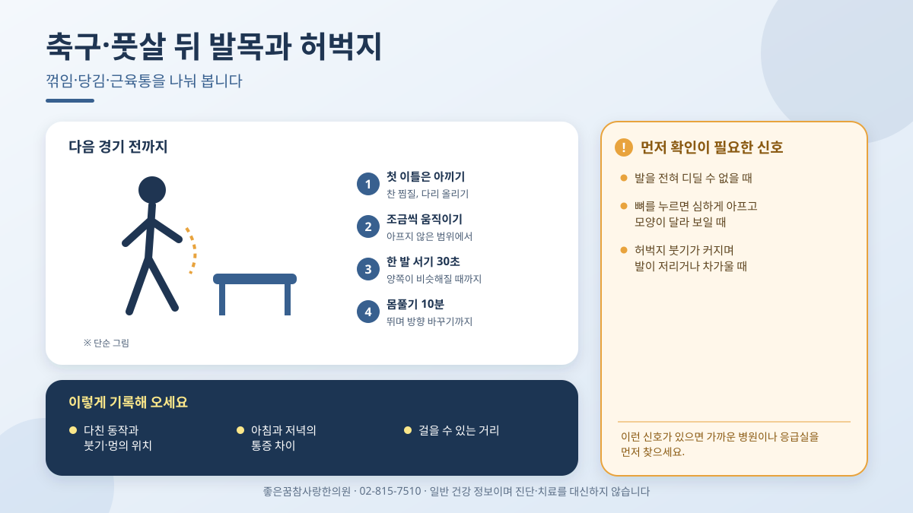

이종호 한의사 감수좋은꿈참사랑한의원 대표원장 (한의사 면허번호 19769)발행 2026-11-26 · 수정 2026-11-26
이 글의 차례
일요일 아침, 학교 운동장에 아직 이슬이 남아 있습니다. 동네 조기축구회 사람들과 몸을 대충 풀고 공을 차기 시작하면 금세 숨이 차오르고, 한 시간 반이 훌쩍 지나갑니다. 그런데 집에 돌아와 샤워를 하고 나니 발목 바깥쪽이 시큰하고, 허벅지 앞뒤가 돌덩이처럼 묵직합니다.
진료실에서 월요일 아침이면 이런 이야기를 자주 듣습니다. "공 차다가 살짝 꺾였는데 그땐 괜찮았어요", "슛을 세게 찼는데 허벅지가 뜨끔했어요". 경기 중에는 몸이 달아올라 잘 모르다가, 몸이 식은 뒤에야 통증이 또렷해지는 경우가 많습니다.
축구와 풋살은 달리다 멈추고, 방향을 바꾸고, 공을 차는 동작이 쉼 없이 이어지는 운동입니다. 그래서 발목은 비틀리기 쉽고, 허벅지 앞쪽과 뒤쪽 근육은 순간적으로 크게 늘어났다 줄어듭니다. 아픈 자리는 비슷해 보여도 속사정은 저마다 다릅니다.
저는 이런 분들께 먼저 "어떤 동작에서 아팠는지"를 여쭙습니다. 꺾였는지, 차다가 뜨끔했는지, 부딪혔는지, 아니면 그냥 다음 날 전체적으로 쑤시는지에 따라 살펴볼 방향이 달라지기 때문입니다.
축구 뒤 발목과 허벅지 통증은 어떤 것들이 있나요?
축구나 풋살 뒤에 발목이 아프다면 가장 흔한 것은 발목 바깥쪽 인대가 늘어나는 접질림입니다. 공을 다투다 상대 발을 밟거나, 울퉁불퉁한 땅에서 착지하면서 발바닥이 안쪽으로 꺾이면 바깥 복사뼈 앞과 아래가 붓고 시큰해집니다.
허벅지는 앞쪽과 뒤쪽이 다르게 다칩니다. 슛이나 롱패스처럼 세게 찰 때는 허벅지 앞 근육이 뜨끔하기 쉽고, 전력으로 달리다 속도를 높이는 순간에는 허벅지 뒤 근육이 당기기 쉽습니다. 상대 무릎에 허벅지를 세게 부딪혀 멍이 드는 타박도 흔합니다.
그리고 특별히 다친 순간은 없는데 다음 날부터 허벅지와 종아리 전체가 쑤시는 경우가 있습니다. 평소보다 많이 뛰었을 때 생기는 근육통으로, 대개 이틀째에 가장 심하다가 서서히 가라앉습니다. 다친 것과 많이 쓴 것을 나눠 보는 것이 첫걸음입니다.
왜 공을 차고 나면 발목과 허벅지가 유독 아플까요
축구는 발목을 고정한 채 몸을 돌리는 동작이 많습니다. 스터드가 달린 축구화는 땅을 단단히 잡아 주는 대신, 발이 땅에 붙은 상태에서 몸이 돌아가면 그 힘이 발목과 무릎으로 고스란히 전해집니다. 인조잔디나 풋살장의 딱딱한 바닥도 발목에 부담을 더합니다.
허벅지 근육은 공을 차는 순간 크게 늘어났다가 순식간에 힘을 냅니다. 몸이 충분히 데워지지 않은 아침이나, 평일 내내 앉아 있다가 주말에 갑자기 전력으로 뛰면 근육이 그 속도를 따라가지 못하고 뜨끔해지기 쉽습니다.
피로도 중요한 이유입니다. 경기 후반에 다치는 분이 많은데, 다리 근육이 지치면 발목을 지켜 주는 힘이 떨어지고 착지가 흐트러집니다. 전날 늦게까지 술을 드셨거나 잠을 설친 날이라면 몸이 더 쉽게 무너집니다.
예전에 같은 쪽 발목을 여러 번 접질렸던 분은 인대가 느슨해지고 균형 감각이 둔해져 있어서, 작은 꺾임에도 다시 다치기 쉽습니다. 그래서 처음 다친 발목을 어떻게 회복시키느냐가 다음 경기를 좌우합니다.
접질림, 근육 당김, 근육통은 어떻게 다른가요
접질림은 대개 꺾인 순간이 또렷하고, 복사뼈 주변이 붓고 멍이 아래로 내려옵니다. 발목을 안쪽으로 돌릴 때 아프고, 디딜 때 시큰합니다. 붓기가 심하고 체중을 싣기 힘들다면 인대가 많이 늘어났거나 뼈 쪽 문제일 수 있어 영상 검사를 함께 생각합니다.
근육 당김이나 부분 파열은 뜨끔한 순간이 있고, 근육 한 자리를 누르면 콕 아픕니다. 허벅지 뒤라면 다리를 펴고 앞으로 숙일 때, 허벅지 앞이라면 무릎을 접어 발뒤꿈치를 엉덩이에 붙일 때 당기는 느낌이 심해집니다. 며칠 뒤 멍이 아래쪽으로 번지기도 합니다.
근육통은 다친 순간이 없고, 근육 전체가 넓게 쑤십니다. 움직이기 시작할 때 뻣뻣하다가 조금 움직이면 덜해지는 것이 특징입니다. 근육통이라면 가볍게 걷고 몸을 데우는 것이 회복에 도움이 되지만, 당김이나 접질림이라면 처음 며칠은 아픈 자리를 아껴 주는 쪽이 먼저입니다.
스스로 먼저 살펴볼 수 있는 것
집에서 거울 앞에 서서 양쪽 발목을 비교해 보세요. 한쪽만 부어 복사뼈 윤곽이 흐려졌는지, 멍이 어디까지 내려왔는지를 봅니다. 아픈 다리로 열 걸음쯤 걸어 보고, 절뚝거리는지, 계단을 내려갈 때 더 아픈지도 확인해 봅니다.
허벅지는 의자에 앉아 무릎을 천천히 펴 보고, 엎드려 무릎을 접어 보며 어느 쪽에서 당기는지 확인합니다. 손가락으로 근육을 따라 눌러 보면 콕 아픈 한 점이 있는지, 넓게 뻐근한지가 구분됩니다. 너무 세게 눌러 확인하지는 마세요.
다친 다음 날 아침의 상태도 중요한 단서입니다. 전날보다 붓기와 통증이 덜한지, 비슷한지, 오히려 더한지를 적어 두시면 다치고 나서 어떤 흐름으로 가는지 보이기 시작합니다.
풋살과 축구는 아픈 자리가 조금 다릅니다
풋살은 경기장이 좁고 바닥이 단단해서 짧게 멈추고 방향을 바꾸는 동작이 훨씬 잦습니다. 그래서 발목 접질림과 함께 발바닥, 무릎 앞쪽이 시큰하다는 분이 많습니다. 공을 발바닥으로 끌거나 멈추는 동작이 많아 종아리와 발목 앞쪽이 뻐근해지기도 합니다.
넓은 운동장에서 하는 축구는 달리는 거리가 길고 긴 패스와 슛이 많습니다. 허벅지 뒤 근육 당김과 사타구니 안쪽 근육이 당기는 불편이 상대적으로 흔합니다. 경기 시간도 길어 후반으로 갈수록 다리가 지쳐 착지가 흐트러지기 쉽습니다.
어느 쪽이든 공통점은 '평일엔 거의 안 움직이다가 주말에 한꺼번에'라는 패턴입니다. 진료실에서 보면 경기 자체보다 그 사이 일주일 동안 몸을 얼마나 움직였는지가 다치는 일과 더 가깝게 맞닿아 있는 경우가 많습니다.
다친 뒤 첫 사흘은 어떻게 보내나요
다친 날에는 붓기와 열감을 다스리는 것이 먼저입니다. 아픈 다리를 심장보다 조금 높게 두고, 오래 서 있거나 계단을 많이 오르내리는 일은 줄입니다. 술은 붓기를 키울 수 있어서 회식이나 뒤풀이 자리에서도 조금 아껴 주시는 것이 좋습니다.
둘째 날과 셋째 날에는 아프지 않은 범위 안에서 조금씩 움직여 봅니다. 발목이라면 의자에 앉아 발끝으로 알파벳을 그리듯 천천히 돌리고, 허벅지라면 가볍게 걸으며 근육이 굳지 않게 합니다. 통증이 심해지는 동작은 그 자리에서 멈춥니다.
사흘이 지나도 붓기가 줄지 않거나, 디딜 때 통증이 오히려 늘어난다면 혼자 지켜보기보다 진료를 받아 보시길 권합니다. 처음 며칠의 흐름이 회복 기간을 가늠하는 데 큰 도움이 됩니다.
먼저 이렇게 여쭙니다
- 어떤 동작에서 아팠나요? 꺾임, 슛, 전력 질주, 부딪힘 가운데 어디에 가깝나요?
- 다친 직후 계속 경기를 하셨나요, 바로 나오셨나요?
- 붓기와 멍은 언제부터, 어디까지 생겼나요?
- 같은 쪽 발목이나 허벅지를 예전에도 다친 적이 있나요?
- 경기 전 몸풀기는 얼마나 하셨나요? 평소 운동은 주에 몇 번인가요?
- 전날 잠과 음주, 피로는 어떠셨나요?
다친 순간을 정확히 기억하지 못하셔도 괜찮습니다. "전반에는 괜찮았는데 후반 끝나고 나서 아팠다" 정도만 말씀해 주셔도 이야기의 실마리가 됩니다.
신고 뛰신 축구화나 풋살화를 가져와 주시면 밑창이 닳은 모양도 함께 봅니다. 바깥쪽만 유난히 닳았거나 좌우가 다르게 닳았다면, 평소 걸음과 착지 습관을 짐작하는 데 도움이 됩니다.
일상에서 먼저 해 볼 수 있는 것
다친 직후 이틀 정도는 아픈 자리를 아껴 주세요. 붓고 열감이 있는 접질림이나 근육 당김이라면 차가운 찜질을 수건에 싸서 15분 정도 대고, 잠잘 때는 다리를 베개 위에 올려 두면 붓기를 다스리는 데 도움이 될 수 있습니다.
- 다친 날 바로 뜨거운 탕에 오래 들어가거나 세게 주무르지 않기
- 붓기가 가라앉으면 아프지 않은 범위에서 발목을 천천히 돌리기
- 걸을 때 통증이 줄어드는 만큼 걷는 거리를 조금씩 늘리기
- 허벅지는 당김이 느껴지기 직전에서 멈추는 가벼운 스트레칭부터
- 다음 경기 전 몸풀기를 10분 이상, 가볍게 뛰고 방향 바꾸기까지
- 경기 후반 지칠 때는 무리한 태클이나 전력 질주를 줄이기
다친 근육과 인대는 통증이 사라졌다고 해서 원래 힘을 다 되찾은 것은 아닙니다. 한 발로 서서 30초 버티기, 발뒤꿈치 들기, 가벼운 런지처럼 균형과 힘을 되살리는 동작을 해 보시고, 양쪽이 비슷해졌을 때 경기에 돌아가시길 권합니다.
몸풀기는 제자리에서 다리를 늘리는 것보다 가볍게 뛰면서 무릎 들기, 옆으로 뛰기, 짧게 멈췄다 출발하기처럼 실제 경기 동작을 작게 해 보는 쪽이 몸을 데우는 데 유리합니다. 겨울 아침에는 평소보다 조금 더 길게 하시는 것이 좋습니다.
축구화도 한번 살펴보세요. 바닥 종류와 맞지 않는 스터드, 닳아서 한쪽으로 기운 밑창은 발목에 부담을 줍니다. 인조잔디라면 짧은 스터드나 터프화를, 풋살장이라면 풋살화를 신는 것이 발목을 덜 비틀리게 합니다.
한의원에서 함께 살필 수 있는 경우
- 발목을 접질린 뒤 붓기는 줄었지만 디딜 때 시큰함이 남아 있는 경우
- 허벅지 앞이나 뒤가 뜨끔한 뒤 뛰려고 하면 다시 당기는 경우
- 같은 쪽 발목을 자주 접질려 경기 때마다 불안한 경우
- 경기 다음 날 근육통이 오래가고 잠까지 설치는 경우
- 발목을 다친 뒤 걸음이 달라져 무릎이나 허리까지 불편해진 경우
좋은꿈참사랑한의원에 오시면 먼저 아래 '먼저 확인이 필요한' 신호가 없는지부터 봅니다. 그다음 맥을 짚고, 아픈 자리를 직접 만져 보며 붓기와 움직임, 걸음걸이를 확인합니다. 필요하다고 판단되면 초음파로 인대와 근육을 살펴봅니다.
진찰한 내용을 바탕으로 침, 약침, 물리치료, 오래 남은 힘줄 통증이라면 체외충격파 가운데 지금 상태에 맞는 것을 정합니다. 걸음이 틀어져 골반과 허리까지 불편하다면 추나를 함께 상의하기도 합니다. 회복이 더딜 때 한약을 상의한다면 드시는 약을 확인한 뒤 신중히 정합니다.
경기 복귀 시기는 통증이 줄어드는 흐름과 한 발 서기, 가볍게 뛰기 같은 동작을 보며 함께 정합니다. 정형외과 진료를 받고 계신다면 그 진료와 나란히 가는 것으로 생각해 주시면 됩니다.
이렇게 기록해 오시면 상담이 쉬워집니다
- 다친 날짜와 경기 중 어떤 동작이었는지
- 붓기와 멍의 위치, 아침과 저녁의 통증 차이
- 걸을 수 있는 거리, 계단 오르내릴 때의 느낌
- 찜질이나 스트레칭을 한 뒤 어떻게 달라졌는지
- 다음 경기 계획과 평소 운동 일정
휴대폰으로 붓기를 같은 각도에서 하루 한 장씩 찍어 오셔도 좋습니다. 사진을 나란히 보면 회복의 흐름이 말보다 또렷하게 보입니다.
다음 경기를 오래 즐기기 위해
주말 축구는 일주일을 버티게 해 주는 즐거움인 분이 많습니다. 그 즐거움을 오래 이어 가려면 다친 몸을 서둘러 경기장에 돌려보내기보다, 한 경기 쉬더라도 제대로 회복시키는 쪽이 길게 보면 더 많이 뛰는 길입니다.
경기가 끝난 뒤의 10분도 몸풀기만큼 중요합니다. 바로 차에 타거나 뒤풀이 자리에 앉기보다 운동장을 천천히 한 바퀴 걷고, 종아리와 허벅지를 가볍게 늘려 주세요. 물을 넉넉히 마시고 그날 밤 잠을 충분히 자는 것도 다음 날 근육통을 덜어 주는 데 도움이 됩니다.
이번 주에는 몸풀기 10분과 한 발 서기 30초, 이 두 가지만 챙겨 보세요. 발목과 허벅지가 다음 경기에서 어떻게 달라지는지 함께 지켜보겠습니다.
이런 증상은 먼저 확인이 필요합니다
- 다친 뒤 발을 전혀 디딜 수 없거나 발목·정강이 뼈를 누르면 심하게 아프고 모양이 달라 보이는 경우
- 허벅지를 부딪힌 뒤 붓기가 계속 커지며 단단해지고 발이 저리거나 차가워지는 경우
이런 신호가 있으면 한의원보다 가까운 병원이나 응급실을 먼저 찾으세요.
함께 읽으면 좋은 글
- 발목을 자주 접질리는 반복 발목 염좌와 발목 불안정은 어떻게 살피나요?
- 달리다가 허벅지 뒤가 뜨끔하며 당긴 햄스트링 손상(파열·당김)은 어떻게 살피나요?
- 허벅지 앞을 세게 부딪혔거나 공을 차다 뜨끔했을 때, 허벅지 앞 근육 타박·파열은 어떻게 살피나요?
- 운동하고 이틀째에 더 쑤시는 지연성 근육통은 왜 생기고, 회복은 어떻게 살피나요?
- 발목이 자꾸 꺾이고 불안한 만성 발목 불안정은 균형 감각부터 어떻게 다시 기르나요?

여쭙는 것
- 어떤 동작에서 아팠나요? 꺾임, 슛, 전력 질주, 부딪힘 가운데 어디에 가깝나요?
- 다친 직후 계속 경기를 하셨나요, 바로 나오셨나요?
- 붓기와 멍은 언제부터, 어디까지 생겼나요?
생활에서 해 볼 것
- 다친 날 바로 뜨거운 탕에 오래 들어가거나 세게 주무르지 않기
- 붓기가 가라앉으면 아프지 않은 범위에서 발목을 천천히 돌리기
- 걸을 때 통증이 줄어드는 만큼 걷는 거리를 조금씩 늘리기
한의원에서 함께 살필 것
- 발목을 접질린 뒤 붓기는 줄었지만 디딜 때 시큰함이 남아 있는 경우
- 허벅지 앞이나 뒤가 뜨끔한 뒤 뛰려고 하면 다시 당기는 경우
- 같은 쪽 발목을 자주 접질려 경기 때마다 불안한 경우
먼저 확인이 필요한 신호
- 다친 뒤 발을 전혀 디딜 수 없거나 발목·정강이 뼈를 누르면 심하게 아프고 모양이…
- 허벅지를 부딪힌 뒤 붓기가 계속 커지며 단단해지고 발이 저리거나 차가워지는 경우
한눈에 보는 표
| 구분 | 핵심 |
|---|---|
| 여쭙는 것 | 어떤 동작에서 아팠나요? 꺾임, 슛, 전력 질주, 부딪힘 가운데 어디에 가깝나요? 다친 직후 계속 경기를 하셨나요, 바로 나오셨나요? |
| 생활에서 해 볼 것 | 다친 날 바로 뜨거운 탕에 오래 들어가거나 세게 주무르지 않기 붓기가 가라앉으면 아프지 않은 범위에서 발목을 천천히 돌리기 |
| 한의원에서 함께 살필 것 | 발목을 접질린 뒤 붓기는 줄었지만 디딜 때 시큰함이 남아 있는 경우 허벅지 앞이나 뒤가 뜨끔한 뒤 뛰려고 하면 다시 당기는 경우 |
| 먼저 확인이 필요한 신호 | 다친 뒤 발을 전혀 디딜 수 없거나 발목·정강이 뼈를 누르면 심하게 아프고 모양이 달라 보이는 경우 허벅지를 부딪힌 뒤 붓기가 계속 커지며 단단해지고 발이 저리거나 차가워지는 경우 |
자주 묻는 질문
발목을 접질렸는데 걸을 수 있으면 괜찮은 건가요?
걸을 수 있어도 인대가 늘어나 있을 수 있습니다. 붓기와 멍이 심하거나 뼈를 누를 때 아프면 영상 검사를 먼저 받아 보시고, 디딜 때 시큰함이 오래 남으면 진료를 받아 보시길 권합니다.
다친 날 찜질은 차갑게 하나요, 따뜻하게 하나요?
붓고 열감이 있는 처음 하루이틀은 수건에 싼 차가운 찜질을 15분 정도 해 보세요. 붓기와 열감이 가라앉은 뒤 뻣뻣함이 남으면 따뜻한 쪽이 편할 수 있습니다.
허벅지가 뜨끔했는데 다음 주 경기에 나가도 되나요?
통증 없이 빠르게 걷고 가볍게 뛸 수 있는지, 양쪽 다리 힘이 비슷한지를 먼저 확인해 보세요. 당김이 남아 있다면 한 경기 쉬는 편이 다시 다치는 일을 줄이는 데 도움이 됩니다.
발목 보호대를 계속 차고 경기해도 되나요?
다친 뒤 복귀 초기에는 보호대가 안정감을 줄 수 있습니다. 다만 보호대에만 기대기보다 한 발 서기, 발뒤꿈치 들기처럼 발목을 지키는 힘과 균형을 함께 길러 가시길 권합니다.
좋은꿈참사랑한의원은 재진 때 지난번 이야기부터 이어서 여쭙니다. 진료시간과 예약은 오시는 길에서 확인하세요.
어디서 상담받을 수 있나요?
좋은꿈참사랑한의원은 서울 동작구 만양로2길 2 신성빌딩 3층·5층(서울 동작구 상도동, 7호선 상도역 3번 출구 근처)에 있습니다. 한의사 3명(이종호 대표원장, 조영기 수석진료원장, 정원영 진료원장)이 진료합니다. 진료시간은 평일 09:30~20:00(점심 13:00~14:00), 토·일·공휴일 09:30~15:00이며, 방문 전 전화로 확인을 권합니다. 예약은 네이버 예약, 카카오톡 상담, 전화 02-815-7510로 받습니다.
이 글은 일반적인 건강 정보이며 개인의 진단이나 치료를 대신하지 않습니다. 증상이 있거나 복용 중인 약이 있다면 진료를 통해 확인하세요. 치료 효과는 개인마다 다를 수 있습니다.
작성 기준: 일반적으로 알려져 있는 건강 정보를 참고해 정리했습니다(대표원장 감수). 증상 기록은 1~2주 동안 하루 1회, 비슷한 시간에 적어 오시면 지난 상태와 비교하기 쉽습니다.